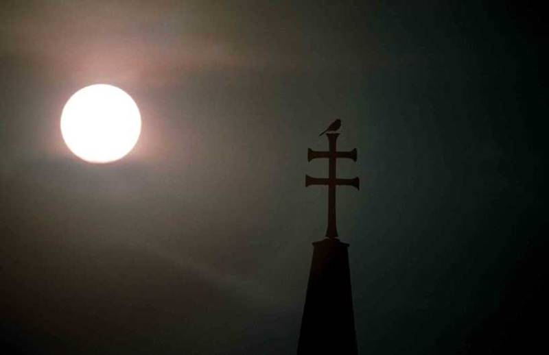
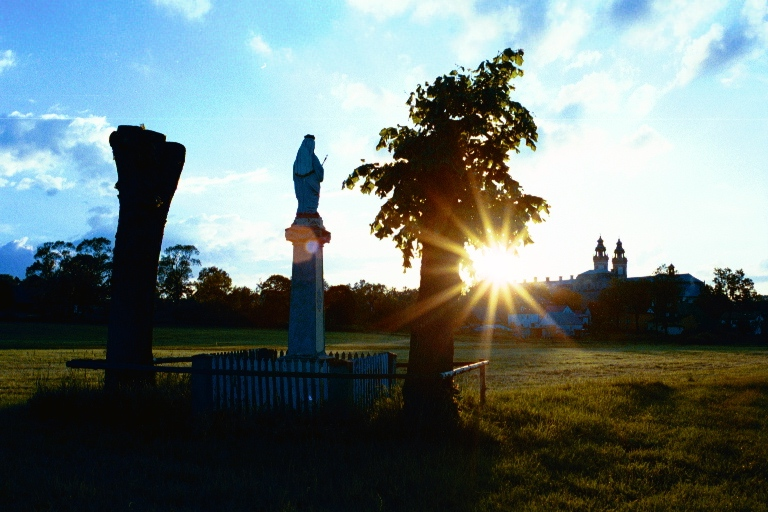

Na tej stronie chciałbym pokazać (za zgodą autora :-) kilka zdjęć Krzeszowa wykonanych przez Stanisława Wesołowskiego. Autor tych zdjęć twierdzi, że jego nazwisko nie jest jeszcze tak wyrobione jak np. Ansel Adams, ale faktem jest, że Ansel Adams tak ciekawych zdjęć Krzeszowa nigdy nie zrobił :-)
Wszystkie poniżej zamieszczone zdjęcia publikuję za zgodą ich autora. Jednak zgoda ta dotyczyła się tylko i wyłącznie mojej strony www, dlatego też chciałbym oświadczyć, że jeśli kiedykolwiek komukolwiek pozwoliłem na wykorzystywanie zdjęć z mojej strony, to zgoda ta nie dotyczy tych zdjęć. Jeśli ktoś jest nimi zainteresowany, to powinien kontaktować się bezpośrednio z ich autorem. Gdyby ktoś był zainteresowany wydaniem albumu z tymi zdjęciami to też niech się z nim skontaktuje, bo z tego co mi wiadomo, to szuka on sponsora w celu wydania albumu :-)
Zdjęcia są "wrzucone" od razu w nieco większej rozdzielczości, nie są to miniaturki do powiększania. Jedyna wada takiego rozwiązania to fakt, że ponad 1 MB od razu się ściąga .... ale jak kogoś to interesuje, to pewnie poczeka.





